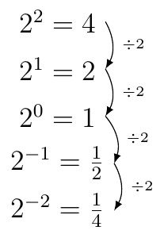
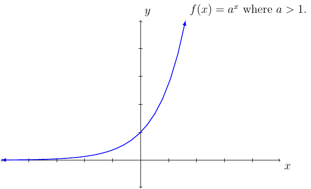
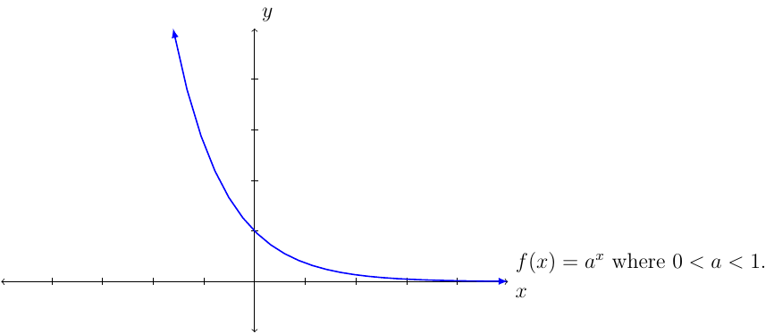

Section 4.2

Property 10 (Law of Exponent)
Given the previous equation we can see the following:
This implies that \(\left(a^m\right)^n=a^{m\cdot n}\).
We have seen that \(a^{-n}=\frac{1}{a^n}\) and \(a^0=1\) (but \(a\) cannot be \(0\)).
This and previous equations imply \(\frac{a^m}{a^n}=a^{m-n}\).
Example 69
Show \(\frac{a^m}{a^n}=a^{m-n}\).
“Proof:”
Something to remember when it comes to the base of the exponent.
Property 11
Let \(n\) be a natural number.
When it comes to the exponential equation we have the following.
Property 12
The equation \(a^m=a^n\) if and only if \(m=n\).
We are familiar with linear growth.
The first term is \(a_1=2\), second term is \(a_2=4\), and so on. The \(n^{\text{th}}\) term is? The answer would be \(a_n=2n\). This would be similar to \(f(x)=2x\) where the domain is all real numbers instead of all natural numbers. The function would be called a linear function.
Next, we consider exponential growth.
The first term is \(a_1=2\), second term is \(a_2=4\), third term is \(a_3=8\), and so on. The \(n^{\text{th}}\) term is \(a_n=2^n\). This would be similar to \(f(x)=2^x\) where the domain is all real numbers instead of all natural numbers. The function would be called an exponential function.
Definition 47
If \(a>0\) and \(a\ne1\) then the exponential function base \(a\) is
The domain of \(f\) is the set of all real numbers. (Consider \(2^x\) what \(x\) value would case \(2^x<0\). Answer: there isn’t a real number that would cause this.)
The range of \(f\) is the interval \((0\infty)\).
The function \(f\) is a continuous function over its domain.
If \(a>1\), then \(f\) is increasing on its domain.
If \(0<a<1\), then \(f\) is decreasing on its domain.
The function \(f\) has a horizontal asymptote \(y=0\).
The graph passes through the points: \((-1,\frac{1}{a})\), \((0,1)\), and \((1,a)\).
The graph of the exponential function changes based on the value of \(a\).
The graph of \(f(x)=a^x\) when \(a>1\) we have:

The graph of \(f(x)=a^x\) where \(0<a<1\) we have:

Example 70
Solve \(2^{x^2-x}=64\).
Solution:
We want to use the fact that \(a^m=a^n\) if and only if \(m=n\). However, the equation does not satisfy the left-hand-side condition. However, \(64=2^6\). That is,
Which implies \(x^2-x=6\). Solve this equation we have:
Therefore, the solution is \(\{3,-2\}\).
It is important to notice that the past equation is only possible to solve since \(64\) is a value of \(2\) to some power. However, in the future that will not always be the case.
Remember \(f(x)=a^x\) is continous everwhere and the range is \((0,\infty)\).
Let \(f(x)=2^x\). Notice that \(f(2)=2^2=4\) and \(f(3)=2^3=8\). By the Intermediate Value Theorem, there exists a \(c\in(2,3)\) such that \(f(c)=7\). However, the value of \(x\) is not common knowledge. This leads to the next section. What value of \(x\) causes \(2^x=7\)?
Definition 48 (Compount Interest)
If \(P\) dollars are deposited in an account paying an annual rate of interest \(r\) compounded \(n\) times per year, then after \(t\) years the account will contain \(A\) amount of dollars, according to the following formula.
An important base for the exponential equation is the number \(e\) defined as:
If the investment is compounded continuously we have the following formula: